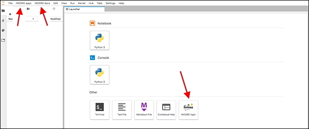

IN-CORE Lab¶
A user can run and edit Jupyter Notebooks interactively in IN-CORE Lab. You can access IN-CORE Lab at https://incore.ncsa.illinois.edu. The IN-CORE Lab is a customized Jupyter Lab with pyIncore installed on the Linux server.
When you access it, you might see a button to Start Server followed by a progress bar.

Main Incore Lab’s dashboard tab:

Running a Notebook in the Lab¶
In the Running Notebook locally section we described how to run a Building Damage Notebook locally as an example, but you can develop and run all sorts of notebooks as you explore. The following section focuses on step-by-step instructions of running Notebooks on the IN-CORE Lab.
Upload the Building Damage Analysis notebook from your local machine to IN-CORE lab by clicking the
Uploadicon in the left panel and select building_dmg.ipybn.

The Notebook shows up in the left panel after a successful upload.
Double click to open the Notebook in the main area and run it. For instructions on how to run a Building Damage Analysis, please refer to the previous section Running Notebook locally.

Accessing IN-CORE Web Tools¶
This section shows user how to access IN-CORE Web Tools on IN-CORE Lab. The IN-CORE Lab is a customized Jupyter Lab with INCORE Login button in the main window and two IN-CORE-related menus, INCORE apps and INCORE docs.

Click on
INCORE Authenticatorbutton in the main window.The Fragility, Data and Hazard Explorers under
INCORE appsmenu become enabled after pressing theLOGINbutton
The IN-CORE Web Tools Viewers become part of INCORE Lab as shown below for the Fragility viewer.

IN-CORE documentation¶
For ease of access, documentation is easily accessible from IN-CORE Lab.
The second IN-CORE menu, INCORE docs allows the user to see pyIncore documentation and API endpoints definitions for accessing Fragility, Data and Hazard server(s).